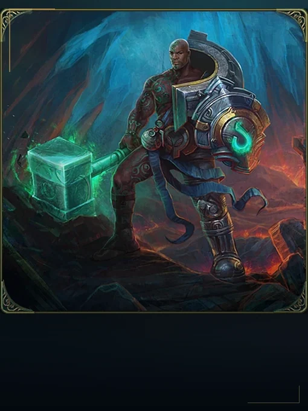
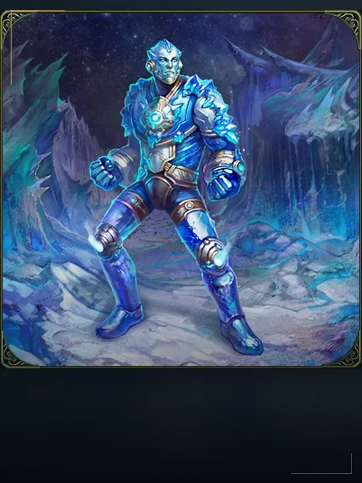
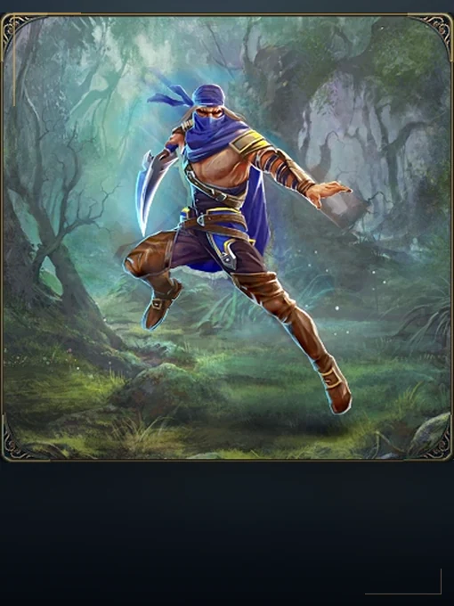
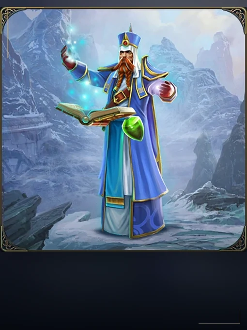
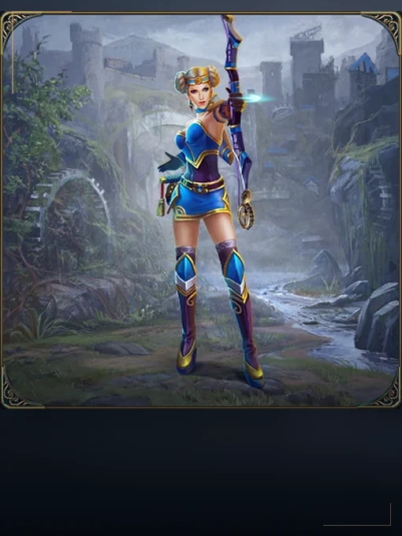
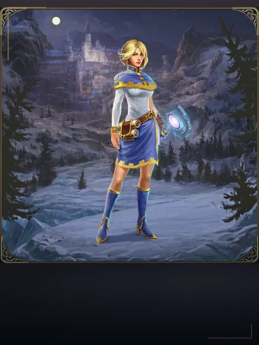

图标提示与技能效果词典
只在英雄头像、技能 / 天赋图标和套装部件图标上悬停或长按，即可查看原版 persistentId、效果标签、参数摘要与 XDB 来源；词典新增 CC、Debuff、Buff、其他效果四组中英对照表。
打开术语与效果词典 →从零读懂 Prime World
以玩家理解为起点，以原版数据为依据。先学概念，再看技能与天赋，最后进入完整游戏策划资料。
原版、Nova 与重制选择
不再把“源码存在”“Nova 已实现”和“我们计划采用”混为一谈。对照 30 多项系统，查看证据、争议、数值差异和阶段性决策。
六大英雄定位 选择你的战斗方式

TANK坦克守护前线 · 控制与承伤
FIGHTER战士近距离进攻 · 持续交战
ASSASSIN刺客潜行突袭 · 快速击破
MAGE法师法术压制 · 区域控制
MARKSMAN射手远程打击 · 稳定输出
SUPPORT辅助治疗保护 · 团队增益推荐按这个顺序学
核心概念
一句话分清英雄、招式、天赋、套装和配置。弄懂局内／局外成长的区别。
开始阅读 → 02 · 边界技能不等于天赋
什么是主动、被动、技能强化、替代大招？将原版能力映射成你熟悉的技能栏。
分清技能 → 03 · 交互6×6 天赋盘
使用治疗师真实的 36 格，亲手花 Prime“点亮”，观察发展点和层级解锁。
动手试一试 → 04 · 组合套装怎样生效
“天赋套装”和“天赋配置盘”不是同一个东西。交互试验真实的 2／3 件奖励。
模拟套装 → 05 · 英雄一个英雄看懂全部
治疗师的普通攻击、被动、技能 1、技能 2、大招、替代大招、强化与路线。
进入治疗师 → 06 · 随时查中英文术语词典
按中文、英文和源码字段搜索 Talent、Ability、Talent Set、Talent Kit、Prime 等。
查专业术语 →用一张图理解一局
两个看起来很像、实际完全不同的 “Set”

这版资料的边界
真实治疗师天赋盘、费用、层级、核心招式、套装组件及其明确描述的效果，链接到旧资料页面。
“技能 1 / 技能 2 / R”“技能树路线建议”是帮助理解的标记，不意味着原游戏固定使用这些槽位或键位。
官方仓库说明：README_English.md（外部链接，需要联网）。源码和部分美术有专门许可限制，学习研究不自动等于可商业复用。
从“这张地图有什么”走向“这个玩法怎么算”
同一套角色和天赋，在三路推进、单线快打、龙蛋护送、合作守城中有完全不同的战斗目标与资源节奏。
公式不止能读，现在可以代入计算
可交互演算 Nova 旧/新穿透系数、Nival 原版攻速与暴击、穿透、防御、伤害类型、护盾扣血、治疗溢出；所有中间步骤逐项展示。
Nival 原版与 Nova 社区版本分开计算；不将公告未公开的参数强行映射为游戏属性。